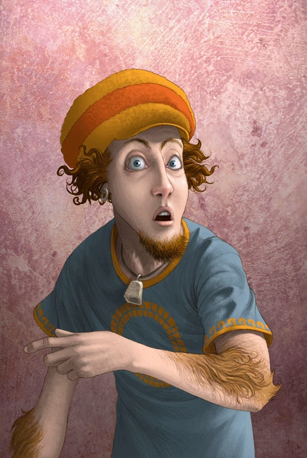

Nessa página você irá encontrar informações sobre os personagens principais da série de livros: Percy Jackson, Annabeth Chase e Grover Underwood.
-
Perseu "Percy" Jackson
Percy Jackson é o personagem principal da série Percy Jackson e os Olimpianos. Percy é um semideus grego, filho de Poseidon e Sally Jackson, tendo sido Conselheiro Chefe do Chalé 3 e Praetor da Legião Fulminata. Atualmente estuda na faculdade em Nova Roma, com sua namorada. Meio-irmão de Tyson. Namorado de Annabeth Chase. Percy nasceu em 18 de Agosto de 1993.
-
Annabeth Chase
Annabeth Chase é uma semideusa grega, filha da deusa Atena e do professor Frederick Chase. A garota é prima do semideus nórdico Magnus Chase. Annabeth é uma das personagens principais da série Percy Jackson e os Olimpianos, bem como da série Os Heróis do Olimpo, pois ela é um dos Sete semideuses da Profecia dos Sete. Annabeth é a arquiteta do Olimpo e ex-conselheira-chefe do chalé de Atena. Ela é a namorada de Percy Jackson.
-

Grover Underwood
Grover Underwood é um sátiro da natureza, amigo de Percy Jackson e Annabeth Chase. Ele também foi o sátiro que encontrou Thalia, e mais tarde foi designado para proteger Percy. Ele também descobriu Nico e Bianca di Angelo, todas as crianças dos Três Grandes. Foi ele quem reconheceu Percy como meio-sangue primeiro e o levou ao Acampamento Meio-Sangue.